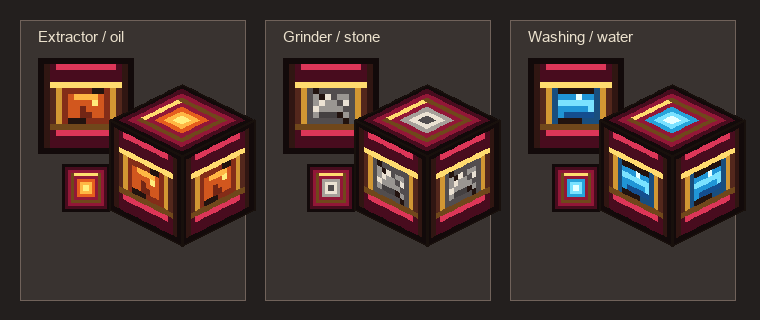

收成
成熟甜菜帶來根、葉與種子，所有路線從這裡分化。
- 甜菜葉
- 甜菜根
- 甜菜種子
Minecraft Java 26.2 · Fabric
甜菜不再只是湯裡的配角。收葉、抽纖、壓榨、研磨、篩洗——從紅色根莖長出木材、石頭、鐵、水與十三座神殿。
模組核心
為極限空島與低資源生存設計。玩家從原版甜菜出發，讓每次收成同時打開新的材料分支；最終透過經書與神殿，把手工勞動逐步轉化為範圍能力與自動化。
生存路線
先建立基本生存，再透過三種轉經桶突破材料限制。
成熟甜菜帶來根、葉與種子，所有路線從這裡分化。
葉片抽成纖維，枝條壓成木質方塊，補齊早期生活。
甜菜塊進入轉經機械，產出石材、水滴、油與晶粒。
蒐集聖文字、裝訂四階經書，讓生產跨入範圍化。
轉經機械
對桶身右鍵手轉，或在底座加入燃料持續運轉。同類桶身能向上堆疊，最高以四倍速度處理材料。

互動合成樹
搜尋物品或選擇路線；點擊節點可查看取得配方與後續用途。
配方資料直接由模組的 149 份 JSON 與轉經桶程式規則產生。
十三神殿
每座神殿依序放入 LV1–LV4 經書，效果半徑由 16 格擴張至 64 格。
開始十三殿巡禮 →目前版本 · 0.1.0